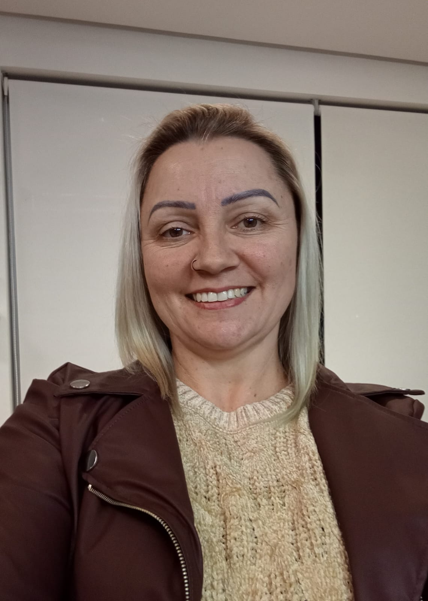
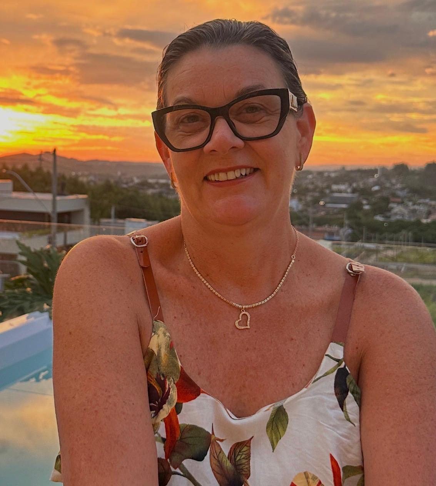

Quem faz acontecer

Nossa equipe
Conheça quem doa tempo e carinho pra essa causa acontecer todos os dias.
Karen Kaefer
Fabiana Magnago Rocha

Francieli Henrich Jacobsen

Nice Closs
Valdoni Rodrigues Rocha